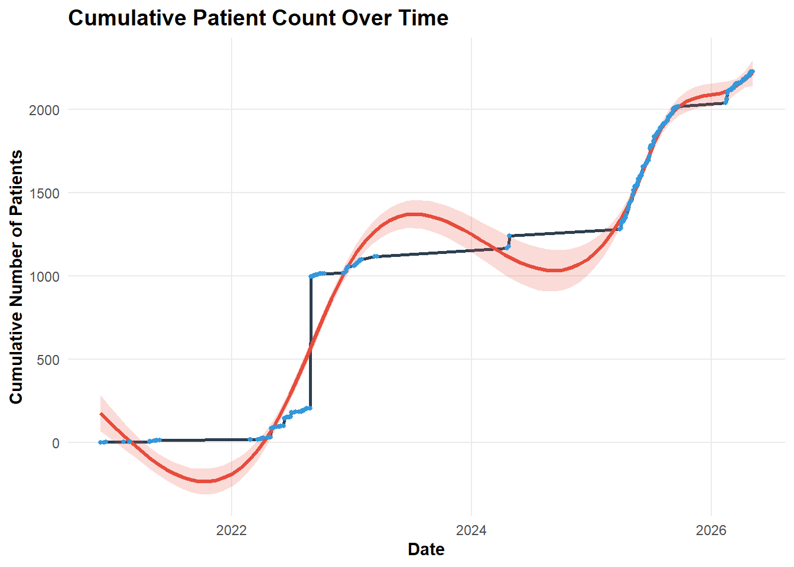
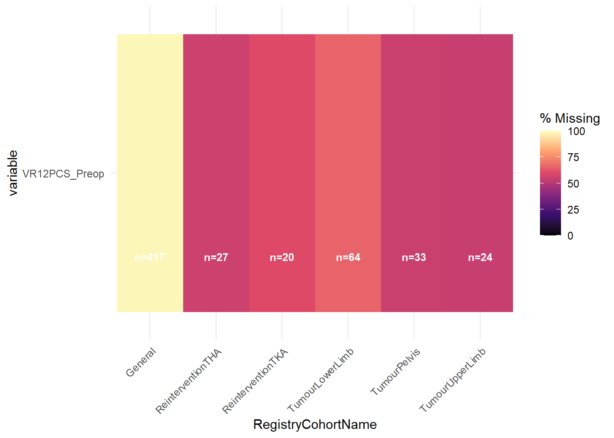
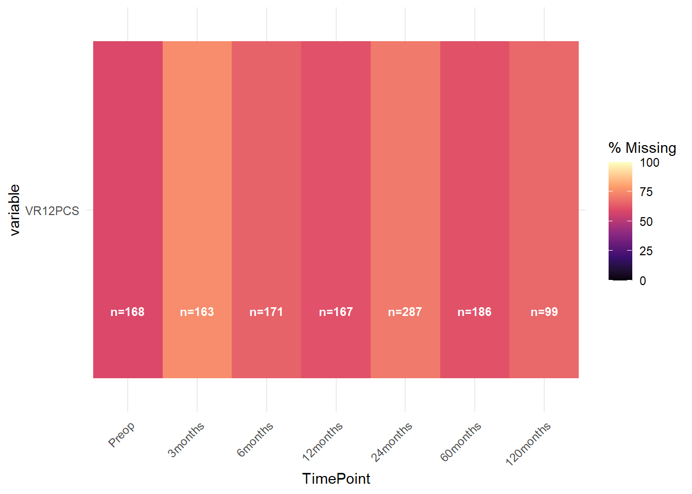
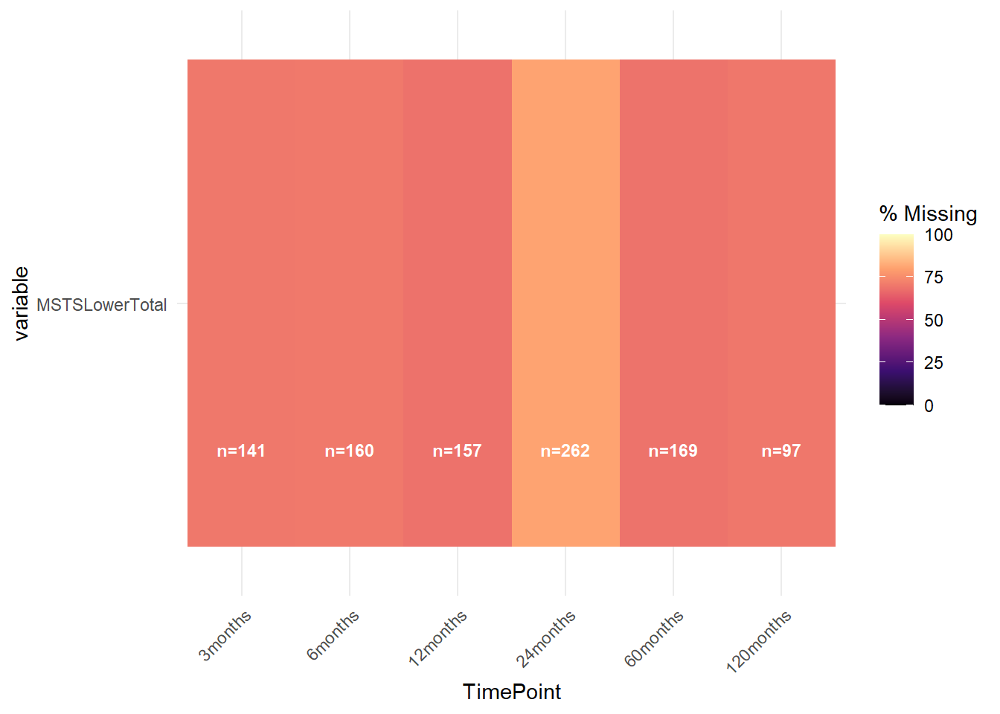
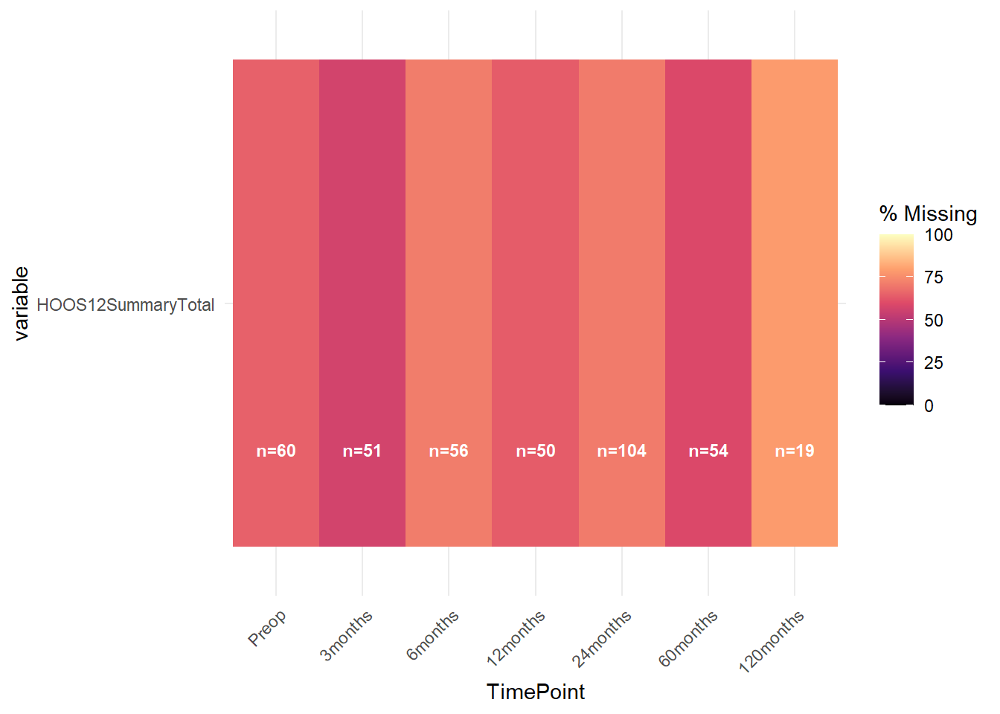
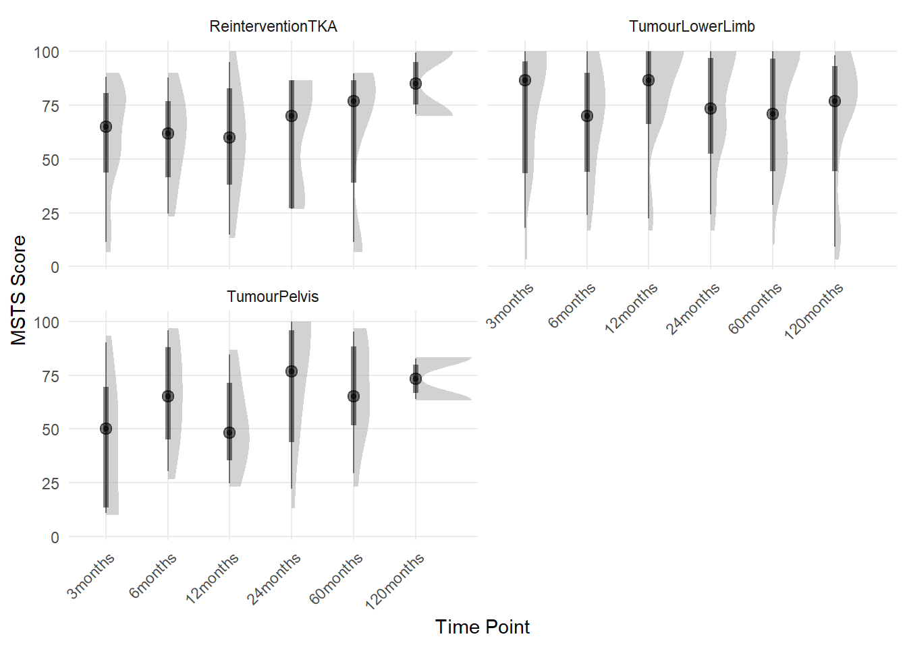
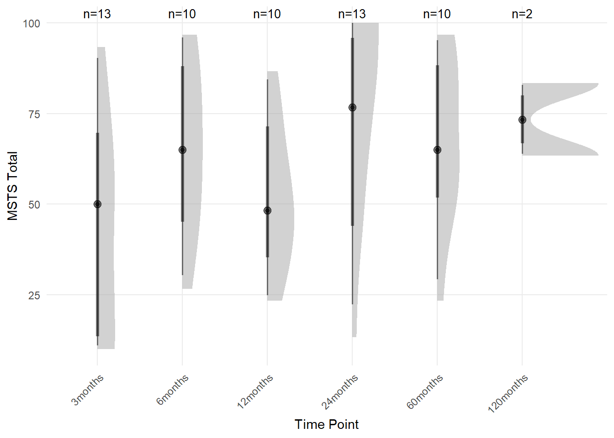
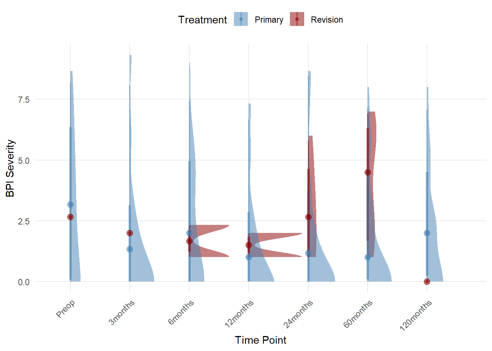
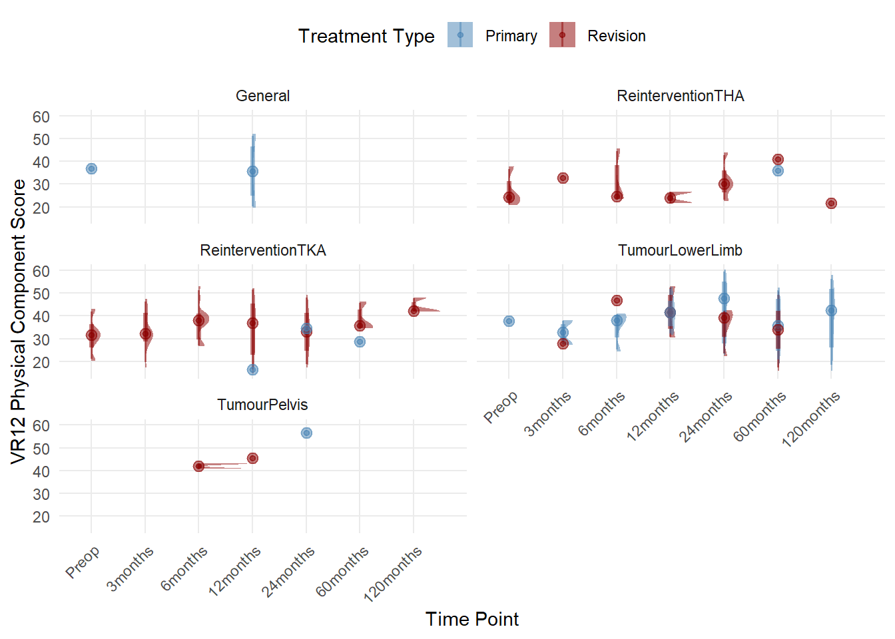
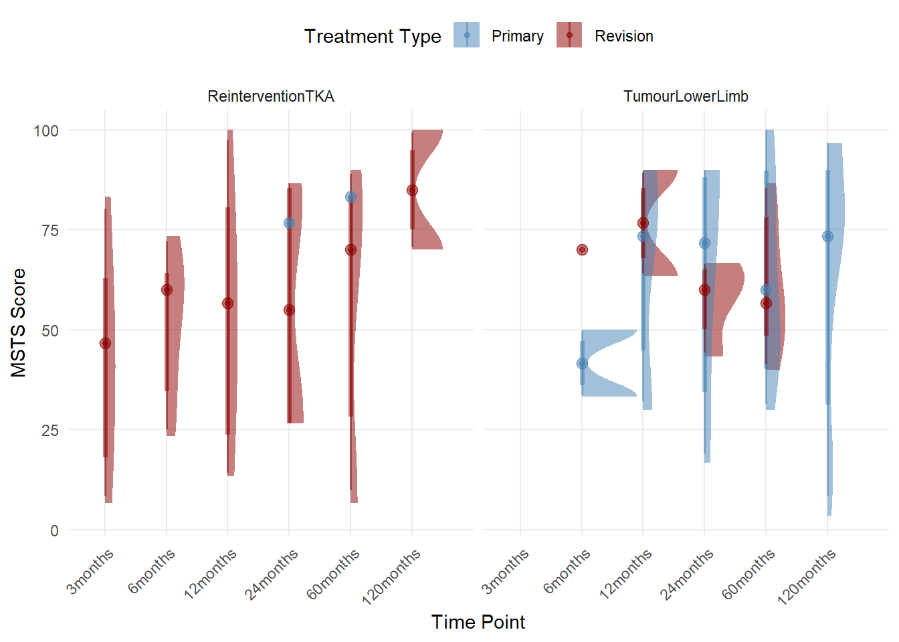

TreatTable (live): 2588 records
Snapshot (pipeline): 2136 records
Dropped records: 451 recordsCOMPRESSOR_Governance
1 Preamble
The following analysis is a report on the activity, quality and data contained in the COMPRESSOR registry, which is described in the registry wiki.
Analysis packages were loaded initially into the R environment.
Access to the COMPRESSOR datasets was pre-authorised.
A function was generated to retrieve files using the googledrive package, to call on later in the analysis for processing data imports.
Data was retrieved from live database tables. Source files were specified and stored as global variables to call on in further functions.
A static registry snapshot was retrieved and formatted based on the fixed date of preparation of the snapshot (10-Mar-2026).
2 Context
COMPRESSOR (Complex Reconstructive Surgery Outcomes Registry) is a clinical quality registry supporting the practices of one surgeon in Sydney, New South Wales. It has been in operation over two distinct periods, with upper and lower limb tumour cohorts, as well as tumour of the pelvis and reintervention arthroplasty cohorts of the hip and knee. The periods that the registry has been actively collecting PROMs;
25-Feb-2022 to 29-Sep-2022
27-Mar-2025 to 2-Oct-2025
15-Feb-2026 to Present
It should be noted that collection of PROMs has been heavily restricted for this registry due to concerns over appropriateness to follow up patients at high-risk of mortality or other contraindications for completing scores. These restrictions have only recently been lifted, and only then for cases receiving hardware components of interest (Ossis, Stryker GMRS-MRH).
How to read this report
Patient-reported outcome measures (PROMs) are standardised questionnaires completed by patients themselves, capturing pain, physical function, and quality of life. They provide an objective measure of how patients feel and function that complements clinician assessments. The specific questionnaires used in COMPRESSOR vary by cohort:
- VR12 — a general health questionnaire completed by all patients, covering physical and mental health
- MSTS — the Musculoskeletal Tumour Society score, measuring physical function in limb-salvage patients
- HOOS-12 / KOOS-12 — hip and knee function scores used in arthroplasty cohorts
- BPI Short Form — a brief pain inventory capturing pain severity
Procedure survival curves (Kaplan-Meier plots) show the proportion of implants remaining free of failure over time. The shaded band around each line represents uncertainty — wider bands mean smaller samples and less certainty. The numbers below the plot show how many patients remain at risk of failure at each time interval.
Eligible cases at a given timepoint are those for whom the registry was actively collecting PROMs when their follow-up window fell due. Not all enrolled patients are eligible at every timepoint, depending on when they were enrolled relative to the registry’s active collection periods.
Technical definitions for terms used in this report (procedure failure, treatment progression end, survivor bias, and eligibility calculation) are available in collapsible notes throughout the document.
3 Snapshot Validation
4 Recruitment Flow by Region
Flowcharts as per STROBE (Vandenbroucke et al. 2007) and RECORD (Benchimol et al. 2015) guidelines were generated for treatments enrolled into the Registry. Followup was set to eligibility at any postoperative timepoint.


The flowcharts were separated into two components (Figure 1 and Figure 2) and exclusions noted for patients that were labelled as a procedure failure.
Technical note: procedure failure definition
A procedure failure is defined by a terminology in the clinical letter and/or a revision case booked that affects the previously operated joint region. The general definition for arthroplasty cases as per the NJRR was used, whereby removal of any significant component of the existing prosthesis with replacement was deemed a failure of the preceding arthroplasty. In the case of infections treated with long-term antibiotics, where the preceding surgical procedure was intended to treat an existing infection, these cases were failed. In cases where DAIR with antibiotic therapy was used for non-septic revisions or primary cases in which an infection has been detected, these have been noted as complications without failing the preceding treatment.
Technical note: treatment progression end
Treatment progression end is a term to denote that a treatment record is no longer being actively tracked by the registry team with respect to clinical outcomes or patient-reported outcomes. In this registry, the majority of cases are deceased, or are not contactable by the registry. A smaller number are stage 1 revisions that have transition to stage 2.
Cumulative recruitment over time was plotted from Registry inception to the present.

The non-linear recruitment progression illustrated in Figure 3 denotes the distinct periods of operation of COMPRESSOR, combined with periods of retrospective chart review of key patient subgroups. The recent increase in recruitment has been facilitated by some reorganisation of the cohort structure of the registry. This has had the side effect of increasing the PROMs eligible pool at the relevant time points.
5 Missingness and Compliance
5.1 Baseline
The COMPRESSOR registry has a patchy history of baseline capture for relevant cohorts. A large proportion of those eligible for baseline capture have been due to their enrolment during the “active” periods of the registry, but not necessarily when the PROMs component of the registry has been active. This has created challenges in determining the eligibility of records for baseline capture.

Missingness for baseline PROMs (represented by VR12, common to all cohorts) is captured in Figure 4. Overall, the eligible pool remains small for many cohorts for baseline capture and response rates vary between cohorts.
5.2 Patient-reported Outcomes by TimePoint
As the registry has been running for a relatively short period of time, the followup PROMs capture is best described as cross-sectional rather than longitudinal, in that there are few treatment records eligible for multiple timepoints in the follow up schedule.

The VR12 is the first score presented to patients at each timepoint, but is not presented at every timepoint for every cohort. The variable capture between timepoints illustrated in Figure 5 may reflect a number of underlying factors (cohort differences in engagement, mode of communication, whether it is the first attempt at followup).
Technical note: eligibility calculation
Eligibility for PROMs capture had to be calculated by determining the date on which the record was created, the date windows for each follow-up time-point and comparing these to the active periods of the registry operation. The eligible pool of treatments varies depending on how the active periods of PROMs collection line up with the follow-up schedule windows.

The MSTS (Figure 6) is presented to TumourPelvis, TumourLowerLimb and ReinterventionTKA cohorts at every followup timepoint. The medium to long-term timepoints present ongoing challenges for re-establishing patient contact by email, with only some cases appearing on the GMRS followup list (N ~ 30 each for the 60months and 120months windows - see below).

The HOOS12 (Figure 7) is presented only to the ReinterventionTHA cohort at all of the registry timepoints. The reduced capture preoperatively may be due to a number of underlying factors which are not yet clear. It may be that the cohort selection within the system has been too slow to capture patients prior to surgery or that patients are dropping out before filling in the HOOS (questionnaire fatigue) within the questionnaire pack.
6 Clinical Results by Patient Group
This section presents results for each patient cohort in a consistent structure: who was treated, how the procedure held up over time, and how patients reported their quality of life and physical function. Each subsection opens with a plain-language summary of the key findings before the supporting data.
The VR12 is a general health questionnaire presented to all patients enrolled in the registry, covering two components: Physical and Mental health. Cohort-specific questionnaires (MSTS, HOOS-12, KOOS-12, BPI) are described where they appear.
6.1 Cross-cohort Overview
What this shows
- Physical health scores (VR12) vary considerably within and between cohorts at 12 months, reflecting the diversity of diagnoses and treatment complexity across the registry
- The Tumour Pelvis cohort shows a split pattern — a subgroup with relatively preserved physical function alongside a subgroup with substantially reduced scores
- Musculoskeletal function scores (MSTS) show a gradual decline over time in the Tumour Lower Limb group, consistent with the expected trajectory after limb-salvage surgery; the apparent improvement at 10 years is likely an artefact of survivor bias (see note below)
- These patterns are based on small, cross-sectional samples and should be treated as preliminary observations rather than definitive trends
| Characteristic | ReinterventionTHA N = 271 |
ReinterventionTKA N = 351 |
TumourLowerLimb N = 721 |
TumourPelvis N = 231 |
TumourUpperLimb N = 101 |
|---|---|---|---|---|---|
| Physical Component | 33 (27, 40) | 38 (24, 44) | 47 (36, 53) | 30 (19, 43) | 35 (33, 37) |
| Unknown | 18 | 14 | 51 | 12 | 8 |
| Mental Component | 57 (54, 66) | 55 (48, 59) | 51 (45, 58) | 58 (41, 62) | 50 (40, 59) |
| Unknown | 18 | 14 | 51 | 12 | 8 |
| 1 Median (Q1, Q3) | |||||
Between-cohort variability is observed for the Physical Component Score of the VR12 at 12 months (Table 1). Most notable is the wide spread of scores within all cohorts. The Tumour Pelvis cohort shows a bimodal pattern, with some patients reporting good physical function and others quite low — likely reflecting the heterogeneity of pelvic tumour presentations and surgical approaches.

Although MSTS capture remains sparse and largely cross-sectional, a gradual decline in median scores is visible for the Tumour Lower Limb cohort in Figure 8. The apparent improvement at the 10-year timepoint is likely attributable to survivor bias rather than a genuine improvement in function.
Technical note: survivor bias
Survivor bias occurs when the patients remaining available for follow-up at a given timepoint are systematically different from those who have been lost — in this context, because patients with poorer function are more likely to have died or become unreachable before later timepoints. This means long-term PROMs may overestimate the functional status of the surviving cohort as a whole.
6.2 Tumour Pelvis
This cohort includes all cases presenting with abnormal growths directly interacting with the bones of the pelvis. While Ossis (3D-printed patient-specific implant) cases are included, they do not represent the majority of this cohort.
Key findings
- Approximately 70% of primary cases remain free of procedure failure at 10 years; revision cases show substantially worse durability, with median survival around 6 years
- Patient-reported musculoskeletal function (MSTS) is captured at follow-up across multiple timepoints, though sample sizes remain small
- Physical health scores are highly variable within this cohort, consistent with the complexity and heterogeneity of pelvic tumour presentations
- Survival estimates should be interpreted cautiously given small numbers and competing risks from mortality (see note in Observations)
6.2.1 Who were these patients?
| Characteristic | Non-Surgical N = 441 |
Surgical N = 1841 |
|---|---|---|
| TreatmentType | ||
| Primary | 44 (100%) | 147 (80%) |
| Revision Else | 0 (0%) | 5 (2.7%) |
| Revision Own | 0 (0%) | 32 (17%) |
| TreatmentStatus | ||
| Failed | 1 (2.3%) | 30 (16%) |
| No further followup | 8 (18%) | 87 (47%) |
| Ongoing | 35 (80%) | 66 (36%) |
| Pending: Treatment | 0 (0%) | 1 (0.5%) |
| DateInitialExamination | 2016-07-15 - 2025-09-22 | 2009-02-20 - 2026-05-01 |
| AgeAtInitialExam | 49 (35, 58) | 58 (35, 68) |
| AgeAtTreatment | 49 (35, 58) | 54 (33, 67) |
| Sex2 | ||
| Female | 25 (57%) | 83 (45%) |
| Male | 19 (43%) | 101 (55%) |
| Retrospective | 33 (75%) | 135 (73%) |
| Planned | 0 (0%) | 6 (3.9%) |
| Hardware | ||
| adler | 0 (NA%) | 2 (2.1%) |
| gmrs | 0 (NA%) | 12 (13%) |
| ossis | 0 (NA%) | 82 (85%) |
| 1 n (%); Min - Max; Median (Q1, Q3) | ||
6.2.2 How did the procedure hold up?

| Characteristic | 1 Years | 2 Years | 5 Years | 10 Years |
|---|---|---|---|---|
| Procedure Survival | ||||
| Primary | 94% (91% - 98%) | 90% (86% - 95%) | 82% (74% - 90%) | 75% (64% - 88%) |
| Revision | 91% (82% - 100%) | 80% (67% - 96%) | 80% (67% - 96%) | 45% (19% - 100%) |
Primary cases achieved approximately 70% survival at 10 years (Figure 9, Table 3). Revision cases fared considerably worse, with median survival at approximately 6 years. Confidence intervals are wide, reflecting small sample sizes.
6.2.3 How did patients report their function?

MSTS scores for this cohort remain sparse (Figure 10), making meaningful interpretation difficult at most timepoints. The available data are consistent with moderate functional limitation across the follow-up period, reflecting the surgical complexity of pelvic reconstruction.
6.3 Tumour Lower Limb
This cohort includes all cases with abnormal growths directly involving the bones of the lower limb, excluding the pelvis. The majority of surgically treated cases in this cohort involve GMRS or MRH components.
Key findings
- Primary cases show strong procedure durability, with approximately 60% surviving free of failure at 13 years
- Revision cases fare considerably worse, with 60% survival reached at approximately 2.5 years
- Pain levels (BPI) remain relatively low for primary cases across all timepoints, though small sample sizes limit conclusions for revision cases
- Musculoskeletal function (MSTS) shows a gradual decline over time for this cohort — consistent with the natural history of limb-salvage patients — with the caveat of survivor bias at longer timepoints
6.3.1 Who were these patients?
| Characteristic | Non-Surgical N = 1181 |
Surgery recommended N = 31 |
Surgical N = 6761 |
|---|---|---|---|
| TreatmentType | |||
| Primary | 110 (93%) | 3 (100%) | 572 (85%) |
| Revision | 0 (0%) | 0 (0%) | 1 (0.1%) |
| Revision Else | 6 (5.1%) | 0 (0%) | 8 (1.2%) |
| Revision Own | 2 (1.7%) | 0 (0%) | 95 (14%) |
| TreatmentStatus | |||
| Failed | 7 (5.9%) | 0 (0%) | 117 (17%) |
| No further followup | 26 (22%) | 2 (67%) | 290 (43%) |
| Ongoing | 85 (72%) | 1 (33%) | 265 (39%) |
| Pending: Treatment | 0 (0%) | 0 (0%) | 4 (0.6%) |
| DateInitialExamination | 2015-11-02 - 2026-04-21 | 2023-02-01 - 2025-09-08 | 2004-12-22 - 2026-05-06 |
| AgeAtInitialExam | 49 (35, 57) | 67 (32, 74) | 51 (31, 64) |
| Sex2 | |||
| Female | 69 (58%) | 3 (100%) | 329 (49%) |
| Male | 49 (42%) | 0 (0%) | 347 (51%) |
| Retrospective | 83 (70%) | 0 (0%) | 487 (72%) |
| Hardware | |||
| gmrs | 4 (100%) | 0 (NA%) | 308 (95%) |
| mrh | 0 (0%) | 0 (NA%) | 15 (4.6%) |
| ossis | 0 (0%) | 0 (NA%) | 1 (0.3%) |
| 1 n (%); Min - Max; Median (Q1, Q3) | |||
6.3.2 How did the procedure hold up?

| Characteristic | 1 Years | 2 Years | 5 Years | 10 Years |
|---|---|---|---|---|
| Procedure Survival | ||||
| Primary | 92% (90% - 95%) | 88% (84% - 91%) | 77% (73% - 82%) | 70% (64% - 76%) |
| Revision | 83% (75% - 91%) | 69% (59% - 80%) | 61% (50% - 73%) | 42% (26% - 68%) |
Primary cases show strong procedure durability, with 60% survival reached at approximately 13 years (Figure 11, Table 5). Revision cases fare considerably worse, with 60% survival at approximately 2.5 years. Confidence intervals are wide at longer timepoints due to smaller at-risk numbers.
6.3.3 How did patients report their function?

Direct comparison of pain severity between primary and revision cases is limited by small numbers (Figure 12). For primary cases, reported pain levels remain relatively low across all timepoints up to 10 years, which is encouraging given the extent of surgery involved.
6.4 GMRS-MRH (Stryker Components)
This subsection covers all surgical cases across cohorts in which Stryker GMRS or MRH components were used. Cases where both components were implanted are captured in the sponsor-specific reports rather than here. The General cohort within this group includes complex primary arthroplasties for knee deformity with concurrent osteoarthritis.
Key findings
- 70% of primary cases remain free of procedure failure at approximately 10 years; for revision cases this threshold is reached at approximately 5 years
- Physical health (VR12) remains relatively stable across timepoints for the Reintervention TKA group; the Tumour Lower Limb group shows a more variable recovery from 6 months onward
- Musculoskeletal function (MSTS) differs between primary and revision cases in the Tumour Lower Limb group, though the cross-sectional nature of the data limits longitudinal interpretation
- PROMs capture rates and eligible numbers by surgical usage type are summarised in the registry operations section below
6.4.1 Who were these patients?
| Characteristic | Overall N = 4951 |
General N = 271 |
ReinterventionTHA N = 471 |
ReinterventionTKA N = 1311 |
TumourLowerLimb N = 2791 |
TumourPelvis N = 111 |
|---|---|---|---|---|---|---|
| TreatmentType | ||||||
| Primary | 284 (57%) | 26 (96%) | 8 (17%) | 9 (6.9%) | 233 (84%) | 8 (73%) |
| Revision | 2 (0.4%) | 0 (0%) | 1 (2.1%) | 1 (0.8%) | 0 (0%) | 0 (0%) |
| Revision Else | 124 (25%) | 1 (3.7%) | 31 (66%) | 84 (64%) | 7 (2.5%) | 1 (9.1%) |
| Revision Own | 85 (17%) | 0 (0%) | 7 (15%) | 37 (28%) | 39 (14%) | 2 (18%) |
| SurgicalTreatment2 | ||||||
| Non-Surgical | 6 (1.2%) | 1 (3.7%) | 0 (0%) | 1 (0.8%) | 4 (1.4%) | 0 (0%) |
| Surgical | 489 (99%) | 26 (96%) | 47 (100%) | 130 (99%) | 275 (99%) | 11 (100%) |
| TreatmentStatus | ||||||
| Failed | 90 (18%) | 0 (0%) | 9 (19%) | 33 (25%) | 46 (16%) | 2 (18%) |
| No further followup | 154 (31%) | 9 (33%) | 10 (21%) | 25 (19%) | 107 (38%) | 3 (27%) |
| Ongoing | 249 (50%) | 18 (67%) | 28 (60%) | 72 (55%) | 125 (45%) | 6 (55%) |
| Pending: Treatment | 2 (0.4%) | 0 (0%) | 0 (0%) | 1 (0.8%) | 1 (0.4%) | 0 (0%) |
| DateInitialExamination | 2008-09-05 - 2026-05-06 | 2010-09-28 - 2025-08-12 | 2011-12-05 - 2026-04-08 | 2009-02-05 - 2026-04-14 | 2008-09-05 - 2026-05-06 | 2009-02-20 - 2025-06-18 |
| AgeAtInitialExam | 63 (49, 72) | 57 (50, 67) | 70 (60, 76) | 69 (64, 76) | 56 (42, 68) | 59 (58, 66) |
| Sex2 | ||||||
| Female | 256 (52%) | 16 (59%) | 31 (66%) | 65 (50%) | 137 (49%) | 7 (64%) |
| Male | 239 (48%) | 11 (41%) | 16 (34%) | 66 (50%) | 142 (51%) | 4 (36%) |
| Hardware | ||||||
| gmrs | 421 (85%) | 9 (33%) | 47 (100%) | 90 (69%) | 264 (95%) | 11 (100%) |
| mrh | 74 (15%) | 18 (67%) | 0 (0%) | 41 (31%) | 15 (5.4%) | 0 (0%) |
| Retrospective | 418 (84%) | 20 (74%) | 31 (66%) | 100 (76%) | 260 (93%) | 7 (64%) |
| 1 n (%); Min - Max; Median (Q1, Q3) | ||||||
6.4.2 How did the procedure hold up?

| Characteristic | 1 Years | 2 Years | 5 Years | 10 Years |
|---|---|---|---|---|
| Procedure Survival | ||||
| Primary | 95% (92% - 98%) | 92% (88% - 95%) | 82% (77% - 88%) | 79% (72% - 86%) |
| Revision | 89% (84% - 94%) | 78% (72% - 85%) | 68% (61% - 77%) | 55% (45% - 68%) |
Approximately 70% of primary cases remain free of procedure failure at 10 years (Figure 13, Table 7). Revision cases show substantially reduced durability, with 70% survival at approximately 5 years. As with other cohorts, confidence intervals widen considerably at longer timepoints.
6.4.3 How did patients report their function?

Physical health scores remain difficult to interpret at this stage due to small, cross-sectional samples (Figure 14). The Reintervention TKA group shows relative stability across timepoints, while the Tumour Lower Limb group shows a more variable pattern from 6 months onwards — consistent with the more complex recovery trajectory expected after limb-salvage surgery.

Musculoskeletal function scores for the GMRS-MRH subgroup (Figure 15) are limited by small cross-sectional samples. Within the Tumour Lower Limb cohort, differences between primary and revision cases are apparent even with the available data, with revision cases showing lower scores at most timepoints.
6.4.4 PROMs Capture Progress Against Targets
The table below tracks how many patients are eligible and how many have returned questionnaires at each follow-up timepoint, broken down by surgical usage category. Target case numbers are drawn from the study Synopsis.
Complex primary TKA: 67 cases
Revision TKA: 79 cases
Distal femoral reconstruction: 53 cases
Proximal tibial reconstruction: 55 cases
Proximal femoral reconstruction: 78 cases
Total femoral replacement: As available
Femoral diaphyseal defect reconstruction: As available
| Summary of PROMs Eligibility by Timepoint for GMRS | MRH cases | |||||||
|---|---|---|---|---|---|---|---|
| ComplexPrimaryTKA | DistalFemur | ProximalTibia | ProximalFemur | TotalFemur | RevisionTKA | Intercalary | |
| Preop | 18 | 12 | 4 | 14 | 4 | 11 | 0 |
| 3months | 3 | 7 | 4 | 10 | 3 | 19 | 0 |
| 6months | 6 | 13 | 8 | 12 | 2 | 24 | 0 |
| 12months | 14 | 23 | 11 | 14 | 2 | 30 | 0 |
| 24months | 9 | 38 | 21 | 27 | 4 | 34 | 1 |
| 60months | 3 | 35 | 24 | 30 | 2 | 12 | 1 |
| 120months | 1 | 24 | 10 | 17 | 2 | 9 | 0 |
| N Cases (Total) | 33 | 163 | 92 | 141 | 20 | 125 | 6 |
| N Cases (Active) | 26 | 71 | 39 | 52 | 11 | 59 | 1 |
| Summary of Returned PROMs by Timepoint for GMRS | MRH cases | |||||||
|---|---|---|---|---|---|---|---|
| ComplexPrimaryTKA | DistalFemur | ProximalTibia | ProximalFemur | TotalFemur | RevisionTKA | Intercalary | |
| Preop | 1 (5.6%) | 3 (25%) | 2 (50%) | 6 (42.9%) | 0 (0%) | 5 (45.5%) | 0 (NaN%) |
| 3months | 2 (66.7%) | 3 (42.9%) | 2 (50%) | 1 (10%) | 1 (33.3%) | 11 (57.9%) | 0 (NaN%) |
| 6months | 3 (50%) | 5 (38.5%) | 3 (37.5%) | 6 (50%) | 1 (50%) | 14 (58.3%) | 0 (NaN%) |
| 12months | 7 (50%) | 13 (56.5%) | 5 (45.5%) | 4 (28.6%) | 1 (50%) | 19 (63.3%) | 0 (NaN%) |
| 24months | 4 (44.4%) | 11 (28.9%) | 6 (28.6%) | 12 (44.4%) | 2 (50%) | 13 (38.2%) | 0 (0%) |
| 60months | 2 (66.7%) | 9 (25.7%) | 12 (50%) | 12 (40%) | 0 (0%) | 4 (33.3%) | 0 (0%) |
| 120months | 1 (100%) | 9 (37.5%) | 7 (70%) | 10 (58.8%) | 1 (50%) | 3 (33.3%) | 0 (NaN%) |
| Characteristic | Overall N = 4,0601 |
ComplexPrimaryTKA N = 2311 |
DistalFemur N = 1,1411 |
Intercalary N = 421 |
ProximalFemur N = 9871 |
ProximalTibia N = 6441 |
RevisionTKA N = 8751 |
TotalFemur N = 1401 |
|---|---|---|---|---|---|---|---|---|
| TreatmentActivity | ||||||||
| Active | 1,813 (45%) | 182 (79%) | 497 (44%) | 7 (17%) | 364 (37%) | 273 (42%) | 413 (47%) | 77 (55%) |
| Inactive | 2,247 (55%) | 49 (21%) | 644 (56%) | 35 (83%) | 623 (63%) | 371 (58%) | 462 (53%) | 63 (45%) |
| RegistryCohortName | ||||||||
| General | 161 (4.0%) | 119 (52%) | 35 (3.1%) | 0 (0%) | 0 (0%) | 7 (1.1%) | 0 (0%) | 0 (0%) |
| ReinterventionTHA | 301 (7.4%) | 0 (0%) | 14 (1.2%) | 0 (0%) | 252 (26%) | 0 (0%) | 0 (0%) | 35 (25%) |
| ReinterventionTKA | 1,568 (39%) | 14 (6.1%) | 420 (37%) | 0 (0%) | 14 (1.4%) | 210 (33%) | 861 (98%) | 49 (35%) |
| TumourLowerLimb | 1,967 (48%) | 98 (42%) | 672 (59%) | 42 (100%) | 658 (67%) | 427 (66%) | 14 (1.6%) | 56 (40%) |
| TumourPelvis | 63 (1.6%) | 0 (0%) | 0 (0%) | 0 (0%) | 63 (6.4%) | 0 (0%) | 0 (0%) | 0 (0%) |
| TimePoint | ||||||||
| Preop | 580 (14%) | 33 (14%) | 163 (14%) | 6 (14%) | 141 (14%) | 92 (14%) | 125 (14%) | 20 (14%) |
| 3months | 580 (14%) | 33 (14%) | 163 (14%) | 6 (14%) | 141 (14%) | 92 (14%) | 125 (14%) | 20 (14%) |
| 6months | 580 (14%) | 33 (14%) | 163 (14%) | 6 (14%) | 141 (14%) | 92 (14%) | 125 (14%) | 20 (14%) |
| 12months | 580 (14%) | 33 (14%) | 163 (14%) | 6 (14%) | 141 (14%) | 92 (14%) | 125 (14%) | 20 (14%) |
| 24months | 580 (14%) | 33 (14%) | 163 (14%) | 6 (14%) | 141 (14%) | 92 (14%) | 125 (14%) | 20 (14%) |
| 60months | 580 (14%) | 33 (14%) | 163 (14%) | 6 (14%) | 141 (14%) | 92 (14%) | 125 (14%) | 20 (14%) |
| 120months | 580 (14%) | 33 (14%) | 163 (14%) | 6 (14%) | 141 (14%) | 92 (14%) | 125 (14%) | 20 (14%) |
| Eligibility | 572 (14%) | 54 (23%) | 152 (13%) | 2 (4.8%) | 124 (13%) | 82 (13%) | 139 (16%) | 19 (14%) |
| VR12PCS | 36 (27, 43) | 40 (37, 48) | 35 (28, 43) | NA (NA, NA) | 35 (25, 42) | 35 (28, 42) | 35 (28, 41) | 36 (31, 41) |
| MSTS Captured | 191 (4.7%) | 17 (7.4%) | 46 (4.0%) | 0 (0%) | 27 (2.7%) | 35 (5.4%) | 60 (6.9%) | 6 (4.3%) |
| HOOS12 Captured | 21 (0.5%) | 0 (0%) | 0 (0%) | 0 (0%) | 21 (2.1%) | 0 (0%) | 0 (0%) | 0 (0%) |
| KOOS12 Captured | 113 (2.8%) | 1 (0.4%) | 28 (2.5%) | 0 (0%) | 0 (0%) | 15 (2.3%) | 65 (7.4%) | 4 (2.9%) |
| VR12PCS_NA | ||||||||
| !NA | 236 (5.8%) | 20 (8.7%) | 53 (4.6%) | 0 (0%) | 51 (5.2%) | 37 (5.7%) | 69 (7.9%) | 6 (4.3%) |
| NA | 3,824 (94%) | 211 (91%) | 1,088 (95%) | 42 (100%) | 936 (95%) | 607 (94%) | 806 (92%) | 134 (96%) |
| 1 n (%); Median (Q1, Q3) | ||||||||
| Characteristic | Preop1 | 3months1 | 6months1 | 12months1 | 24months1 | 60months1 | 120months1 |
|---|---|---|---|---|---|---|---|
| ComplexPrimaryTKA | |||||||
| MSTS Captured | 0 (0%) | 2 (6.1%) | 3 (9.1%) | 5 (15%) | 4 (12%) | 2 (6.1%) | 1 (3.0%) |
| HOOS12 Captured | 0 (0%) | 0 (0%) | 0 (0%) | 0 (0%) | 0 (0%) | 0 (0%) | 0 (0%) |
| KOOS12 Captured | 0 (0%) | 0 (0%) | 0 (0%) | 1 (3.0%) | 0 (0%) | 0 (0%) | 0 (0%) |
| DistalFemur | |||||||
| MSTS Captured | 0 (0%) | 3 (1.8%) | 4 (2.5%) | 13 (8.0%) | 9 (5.5%) | 9 (5.5%) | 8 (4.9%) |
| HOOS12 Captured | 0 (0%) | 0 (0%) | 0 (0%) | 0 (0%) | 0 (0%) | 0 (0%) | 0 (0%) |
| KOOS12 Captured | 2 (1.2%) | 3 (1.8%) | 3 (1.8%) | 8 (4.9%) | 8 (4.9%) | 3 (1.8%) | 1 (0.6%) |
| ProximalTibia | |||||||
| MSTS Captured | 0 (0%) | 2 (2.2%) | 3 (3.3%) | 5 (5.4%) | 6 (6.5%) | 12 (13%) | 7 (7.6%) |
| HOOS12 Captured | 0 (0%) | 0 (0%) | 0 (0%) | 0 (0%) | 0 (0%) | 0 (0%) | 0 (0%) |
| KOOS12 Captured | 2 (2.2%) | 2 (2.2%) | 3 (3.3%) | 4 (4.3%) | 2 (2.2%) | 1 (1.1%) | 1 (1.1%) |
| ProximalFemur | |||||||
| MSTS Captured | 0 (0%) | 0 (0%) | 3 (2.1%) | 1 (0.7%) | 6 (4.3%) | 9 (6.4%) | 8 (5.7%) |
| HOOS12 Captured | 3 (2.1%) | 1 (0.7%) | 5 (3.5%) | 3 (2.1%) | 6 (4.3%) | 2 (1.4%) | 1 (0.7%) |
| KOOS12 Captured | 0 (0%) | 0 (0%) | 0 (0%) | 0 (0%) | 0 (0%) | 0 (0%) | 0 (0%) |
| TotalFemur | |||||||
| MSTS Captured | 0 (0%) | 1 (5.0%) | 1 (5.0%) | 1 (5.0%) | 2 (10%) | 0 (0%) | 1 (5.0%) |
| HOOS12 Captured | 0 (0%) | 0 (0%) | 0 (0%) | 0 (0%) | 0 (0%) | 0 (0%) | 0 (0%) |
| KOOS12 Captured | 0 (0%) | 1 (5.0%) | 1 (5.0%) | 1 (5.0%) | 1 (5.0%) | 0 (0%) | 0 (0%) |
| RevisionTKA | |||||||
| MSTS Captured | 0 (0%) | 11 (8.8%) | 12 (9.6%) | 19 (15%) | 12 (9.6%) | 4 (3.2%) | 2 (1.6%) |
| HOOS12 Captured | 0 (0%) | 0 (0%) | 0 (0%) | 0 (0%) | 0 (0%) | 0 (0%) | 0 (0%) |
| KOOS12 Captured | 3 (2.4%) | 11 (8.8%) | 14 (11%) | 18 (14%) | 13 (10%) | 4 (3.2%) | 2 (1.6%) |
| Intercalary | |||||||
| MSTS Captured | 0 (0%) | 0 (0%) | 0 (0%) | 0 (0%) | 0 (0%) | 0 (0%) | 0 (0%) |
| HOOS12 Captured | 0 (0%) | 0 (0%) | 0 (0%) | 0 (0%) | 0 (0%) | 0 (0%) | 0 (0%) |
| KOOS12 Captured | 0 (0%) | 0 (0%) | 0 (0%) | 0 (0%) | 0 (0%) | 0 (0%) | 0 (0%) |
| 1 n (%) | |||||||
6.4.5 PROMs Export for Sponsor Reporting
The following code prepares and exports a structured data file for milestone reporting. This is an operational output for the registry team and is not intended for clinical interpretation.
Add product information
The matching on date is not perfect — a fuzzy match on ±5 days has been applied as a supplementary strategy.
6.5 3D-Printed Patient-Specific Implants (Ossis)
This subsection covers surgical cases involving Ossis patient-specific 3D-printed implants. Cases are identified by the Ossis label in the analysis tag. Planned and in-situ cases are excluded; only the index (first) procedure per affected limb is included where patients have had multiple treatments.
Key findings
- This cohort spans multiple registry groups (primarily Tumour Pelvis); demographics are summarised across cohorts below
- Formal outcomes analysis for this cohort is in progress — PROMs capture and procedure survival will be reported in the sponsor-specific Ossis report
6.5.1 Who were these patients?
| Characteristic | Overall N = 1391 |
General N = 11 |
ReinterventionTHA N = 511 |
TumourLowerLimb N = 11 |
TumourPelvis N = 851 |
TumourUpperLimb N = 11 |
|---|---|---|---|---|---|---|
| TreatmentType | ||||||
| Primary | 66 (47%) | 1 (100%) | 1 (2.0%) | 1 (100%) | 63 (74%) | 0 (0%) |
| Revision Else | 32 (23%) | 0 (0%) | 28 (55%) | 0 (0%) | 3 (3.5%) | 1 (100%) |
| Revision Own | 41 (29%) | 0 (0%) | 22 (43%) | 0 (0%) | 19 (22%) | 0 (0%) |
| SurgicalTreatment2 | ||||||
| Surgical | 139 (100%) | 1 (100%) | 51 (100%) | 1 (100%) | 85 (100%) | 1 (100%) |
| TreatmentStatus | ||||||
| Failed | 18 (13%) | 0 (0%) | 5 (9.8%) | 0 (0%) | 13 (15%) | 0 (0%) |
| No further followup | 70 (50%) | 0 (0%) | 22 (43%) | 0 (0%) | 48 (56%) | 0 (0%) |
| Ongoing | 49 (35%) | 1 (100%) | 23 (45%) | 1 (100%) | 23 (27%) | 1 (100%) |
| Pending: Treatment | 2 (1.4%) | 0 (0%) | 1 (2.0%) | 0 (0%) | 1 (1.2%) | 0 (0%) |
| DateInitialExamination | 2017-02-20 - 2026-04-02 | 2024-08-06 - 2024-08-06 | 2017-05-22 - 2026-03-03 | 2020-11-24 - 2020-11-24 | 2017-02-20 - 2026-04-02 | 2024-02-06 - 2024-02-06 |
| AgeAtInitialExam | 64 (44, 71) | 24 (24, 24) | 69 (64, 75) | 22 (22, 22) | 54 (32, 70) | 30 (30, 30) |
| Sex2 | ||||||
| Female | 66 (47%) | 0 (0%) | 32 (63%) | 1 (100%) | 33 (39%) | 0 (0%) |
| Male | 73 (53%) | 1 (100%) | 19 (37%) | 0 (0%) | 52 (61%) | 1 (100%) |
| Retrospective | 118 (85%) | 1 (100%) | 44 (86%) | 0 (0%) | 72 (85%) | 1 (100%) |
| 1 n (%); Min - Max; Median (Q1, Q3) | ||||||
7 Summary and Clinical Implications
Patient-reported outcomes data across all cohorts remain sparse and largely cross-sectional at this stage of the registry’s operation. Where multiple timepoints are available for individual patients, recovery trajectories are beginning to emerge — most notably a gradual functional decline over time in limb-salvage cases for the Tumour Lower Limb cohort, and relatively stable pain levels for primary cases out to 10 years. These signals are consistent with the clinical expectations for this patient group, but should be treated as preliminary observations rather than definitive findings while sample sizes remain small.
Procedure survival data presents the clearest picture available at this stage, with consistent differences observed between primary and revision presentations across all cohorts. Revision cases carry substantially higher risk of further failure across all groups, which is clinically expected but now increasingly supported by registry data. Survival estimates should be interpreted with appropriate caution given the competing risks of mortality and contralateral surgery that have not yet been formally modelled.
The cross-sectional nature of most PROMs follow-up — where patients appear at one timepoint rather than being tracked longitudinally — limits the ability to draw conclusions about individual patient trajectories. Longer-term PROMs should be interpreted with particular caution due to the risk of survivor bias: patients with poorer function are less likely to remain contactable at later timepoints, which tends to inflate apparent scores at 5 and 10 years.
The registry’s capacity to deliver on its longitudinal promise will depend heavily on sustained engagement with patients at later timepoints, and on continued growth in case numbers to support meaningful analysis within each cohort and surgical usage category.
8 Recommendations
The following actions are recommended to strengthen the registry’s clinical utility over the coming reporting period:
Patient engagement and PROMs capture. Sustained effort to contact patients at medium- and long-term follow-up windows (5 and 10 years) is critical, particularly for GMRS-MRH cases where target numbers against the study synopsis are known. Where patients are difficult to reach by email, alternative contact strategies should be explored.
Competing risks modelling. The Kaplan-Meier survival curves currently presented do not account for the competing risks of patient mortality or contralateral surgery. Incorporating these into the analysis — as patients become more numerous and follow-up matures — will provide a more accurate picture of procedure durability.
Diagnosis coding. Refinement of diagnosis coding within cohorts will improve the precision of subgroup analyses, particularly for the Tumour Pelvis and GMRS-MRH groups where case heterogeneity is high.
Data linkage. Identifying opportunities for linkage with local and state datasets (e.g. mortality registries, hospital procedure records) would substantially improve outcomes tracking for patients who are lost to follow-up, and reduce the burden of manual data collection.
References
Benchimol, Eric I., Liam Smeeth, Astrid Guttmann, Katie Harron, David Moher, Irene Petersen, Henrik T. Sørensen, Erik von Elm, and Sinéad M. Langan. 2015. “The REporting of Studies Conducted Using Observational Routinely-Collected Health Data (RECORD) Statement.” PLOS Medicine 12 (10): e1001885. https://doi.org/10.1371/journal.pmed.1001885.
Vandenbroucke, Jan P, Erik von Elm, Douglas G Altman, Peter C Gøtzsche, Cynthia D Mulrow, Stuart J Pocock, Charles Poole, James J Schlesselman, and Matthias Egger. 2007. “Strengthening the Reporting of Observational Studies in Epidemiology (STROBE): Explanation and Elaboration.” PLoS Medicine 4 (10): e297. https://doi.org/10.1371/journal.pmed.0040297.